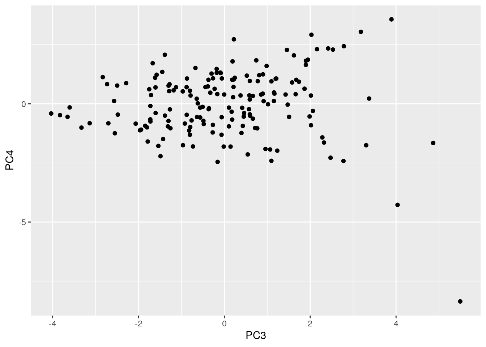

Tenzin Palkyi tp23423
The two datasets that I chose are the college_recent_grads and college_grad_students sets from the fivethirtyeight package in R. The college_recent_grads dataset has information on recent graduates from a total of 173 different college majors with 21 variables. Examples of some of the variables are: how many individuals were in this major; the 25th, 50th, and 75th percentile earnings; the unemployment rate; and the proportion of women who were in this major. The college_grad_students dataset, on the other hand, compared data on both undergraduate and graduate students of the same 173 majors that were listed in the college_recent_grads dataset and has 22 variables. Some unique variables to this college_grad_students were the undergraduate unemployment rate, graduate student unemployment rate, and the proportion of students in the major who were in graduate school. I thought that these two datasets were interesting because it explores the dynamics of various college majors such as the income levels of its graduates, the proportion of students who were in graduate school versus undergratuate, and the total size of each respective major. As someone who has mainly been in the STEM field, I wanted to explore how science majors compare to other majors, like social sciences, engineering, and business. From an initial glance at the data, I would potentially say that there could be a correlation between the proportion of women in a major and the median salary because many engineering majors have higher salaries with relatively low female representation.
library(dplyr)
library(fivethirtyeight)
library(tidyverse)
college_grads <- college_recent_grads
college_comp <- college_grad_studentsBecause the data was already tidy to begin with, I'm going to be pivoting it in the visualization section (#4) when I make the correlation dataframe.
college_grads %>% full_join(college_comp)## # A tibble: 173 x 40
## rank major_code major major_category total sample_size men women
## <int> <int> <chr> <chr> <int> <int> <int> <int>
## 1 1 2419 Petr… Engineering 2339 36 2057 282
## 2 2 2416 Mini… Engineering 756 7 679 77
## 3 3 2415 Meta… Engineering 856 3 725 131
## 4 4 2417 Nava… Engineering 1258 16 1123 135
## 5 5 2405 Chem… Engineering 32260 289 21239 11021
## 6 6 2418 Nucl… Engineering 2573 17 2200 373
## 7 7 6202 Actu… Business 3777 51 2110 1667
## 8 8 5001 Astr… Physical Scie… 1792 10 832 960
## 9 9 2414 Mech… Engineering 91227 1029 80320 10907
## 10 10 2408 Elec… Engineering 81527 631 65511 16016
## # … with 163 more rows, and 32 more variables: sharewomen <dbl>,
## # employed <int>, employed_fulltime <int>, employed_parttime <int>,
## # employed_fulltime_yearround <int>, unemployed <int>,
## # unemployment_rate <dbl>, p25th <dbl>, median <dbl>, p75th <dbl>,
## # college_jobs <int>, non_college_jobs <int>, low_wage_jobs <int>,
## # grad_total <int>, grad_sample_size <int>, grad_employed <int>,
## # grad_employed_fulltime_yearround <int>, grad_unemployed <int>,
## # grad_unemployment_rate <dbl>, grad_p25th <dbl>, grad_median <dbl>,
## # grad_p75th <int>, nongrad_total <int>, nongrad_employed <int>,
## # nongrad_employed_fulltime_yearround <int>, nongrad_unemployed <int>,
## # nongrad_unemployment_rate <dbl>, nongrad_p25th <dbl>, nongrad_median <dbl>,
## # nongrad_p75th <dbl>, grad_share <dbl>, grad_premium <dbl>fullcollege <- college_grads %>% full_join(college_comp)
glimpse(fullcollege)## Rows: 173
## Columns: 40
## $ rank <int> 1, 2, 3, 4, 5, 6, 7, 8, 9, 10, 11…
## $ major_code <int> 2419, 2416, 2415, 2417, 2405, 241…
## $ major <chr> "Petroleum Engineering", "Mining …
## $ major_category <chr> "Engineering", "Engineering", "En…
## $ total <int> 2339, 756, 856, 1258, 32260, 2573…
## $ sample_size <int> 36, 7, 3, 16, 289, 17, 51, 10, 10…
## $ men <int> 2057, 679, 725, 1123, 21239, 2200…
## $ women <int> 282, 77, 131, 135, 11021, 373, 16…
## $ sharewomen <dbl> 0.1205643, 0.1018519, 0.1530374, …
## $ employed <int> 1976, 640, 648, 758, 25694, 1857,…
## $ employed_fulltime <int> 1849, 556, 558, 1069, 23170, 2038…
## $ employed_parttime <int> 270, 170, 133, 150, 5180, 264, 29…
## $ employed_fulltime_yearround <int> 1207, 388, 340, 692, 16697, 1449,…
## $ unemployed <int> 37, 85, 16, 40, 1672, 400, 308, 3…
## $ unemployment_rate <dbl> 0.018380527, 0.117241379, 0.02409…
## $ p25th <dbl> 95000, 55000, 50000, 43000, 50000…
## $ median <dbl> 110000, 75000, 73000, 70000, 6500…
## $ p75th <dbl> 125000, 90000, 105000, 80000, 750…
## $ college_jobs <int> 1534, 350, 456, 529, 18314, 1142,…
## $ non_college_jobs <int> 364, 257, 176, 102, 4440, 657, 31…
## $ low_wage_jobs <int> 193, 50, 0, 0, 972, 244, 259, 220…
## $ grad_total <int> 7479, 6083, 13656, 10801, 168136,…
## $ grad_sample_size <int> 164, 126, 251, 197, 3306, 243, 56…
## $ grad_employed <int> 5640, 4491, 9299, 6739, 124544, 8…
## $ grad_employed_fulltime_yearround <int> 4869, 4038, 8095, 6332, 106097, 8…
## $ grad_unemployed <int> 112, 271, 218, 222, 4997, 100, 16…
## $ grad_unemployment_rate <dbl> 0.01947149, 0.05690886, 0.0229063…
## $ grad_p25th <dbl> 200000, 140000, 135000, 145000, 1…
## $ grad_median <dbl> 124000, 100000, 100000, 102000, 1…
## $ grad_p75th <int> 80000, 72000, 74000, 70000, 70000…
## $ nongrad_total <int> 18483, 10460, 12555, 15759, 17333…
## $ nongrad_employed <int> 13108, 7161, 6692, 10596, 120146,…
## $ nongrad_employed_fulltime_yearround <int> 11334, 6270, 5415, 9044, 103629, …
## $ nongrad_unemployed <int> 580, 366, 310, 449, 5413, 144, 26…
## $ nongrad_unemployment_rate <dbl> 0.04237288, 0.04862495, 0.0442730…
## $ nongrad_p25th <dbl> 75000, 52000, 66000, 60000, 62000…
## $ nongrad_median <dbl> 126000, 95000, 98000, 100000, 900…
## $ nongrad_p75th <dbl> 215000, 125000, 123000, 128000, 1…
## $ grad_share <dbl> 0.2880749, 0.3677084, 0.5210026, …
## $ grad_premium <dbl> -0.01587302, 0.05263158, 0.020408…The "college_grads" dataset had 173 observations and 21 variables while the "college_comp" dataset had 173 observations and 22 variables. The combined dataset, "fullcollege" has 173 observations and 40 variables. The number of observations remained the same because each observation was the name of a particular major, and both datasets included all the majors. Instead of 43 total variables, there are 40 because 3 variables were shared by both datasets: "major", "major_code", and "major_category". I chose to do a full join so that it retained all of the unique variables from both datasets.
full_college <- fullcollege %>% mutate(percent_college = college_jobs/employed) %>%
mutate(total_quantile = ntile(total, 4)) %>% mutate(total_quantile = recode(total_quantile,
`1` = "1st Quantile", `2` = "2nd Quantile", `3` = "3rd Quantile",
`4` = "4th Quantile"))
full_college %>% rename(grad_p25th = "grad_p75th", grad_p75th = "grad_p25th")## # A tibble: 173 x 42
## rank major_code major major_category total sample_size men women
## <int> <int> <chr> <chr> <int> <int> <int> <int>
## 1 1 2419 Petr… Engineering 2339 36 2057 282
## 2 2 2416 Mini… Engineering 756 7 679 77
## 3 3 2415 Meta… Engineering 856 3 725 131
## 4 4 2417 Nava… Engineering 1258 16 1123 135
## 5 5 2405 Chem… Engineering 32260 289 21239 11021
## 6 6 2418 Nucl… Engineering 2573 17 2200 373
## 7 7 6202 Actu… Business 3777 51 2110 1667
## 8 8 5001 Astr… Physical Scie… 1792 10 832 960
## 9 9 2414 Mech… Engineering 91227 1029 80320 10907
## 10 10 2408 Elec… Engineering 81527 631 65511 16016
## # … with 163 more rows, and 34 more variables: sharewomen <dbl>,
## # employed <int>, employed_fulltime <int>, employed_parttime <int>,
## # employed_fulltime_yearround <int>, unemployed <int>,
## # unemployment_rate <dbl>, p25th <dbl>, median <dbl>, p75th <dbl>,
## # college_jobs <int>, non_college_jobs <int>, low_wage_jobs <int>,
## # grad_total <int>, grad_sample_size <int>, grad_employed <int>,
## # grad_employed_fulltime_yearround <int>, grad_unemployed <int>,
## # grad_unemployment_rate <dbl>, grad_p75th <dbl>, grad_median <dbl>,
## # grad_p25th <int>, nongrad_total <int>, nongrad_employed <int>,
## # nongrad_employed_fulltime_yearround <int>, nongrad_unemployed <int>,
## # nongrad_unemployment_rate <dbl>, nongrad_p25th <dbl>, nongrad_median <dbl>,
## # nongrad_p75th <dbl>, grad_share <dbl>, grad_premium <dbl>,
## # percent_college <dbl>, total_quantile <chr>A new column that I created was the "percent_college" variable. This calculates the proportion of jobs in a major that require a college degree. To do this, I divided the number with job requiring a college degree by the toal number of recent graduates in that major who were employed. I also created another categorical variable titled "total_quantile", and this is meant to categorize each major into quantiles based on the "total" variable, so a major with fewer students will be in the 1st Quantile and a very large major will be in the 4th Quantile.
Additionally, I switched the names of the columns for grad_p25th and grad_p75th because it looked like the values were switched. The original grad_p25th column had values that were consistently above the median values, whereas the grad_p75th column had values that were consistently below the median values.
full_college %>% filter(sharewomen >= 0.5, major_category ==
"Humanities & Liberal Arts") %>% select(major, total, unemployment_rate,
median) %>% arrange(desc(total))## # A tibble: 11 x 4
## major total unemployment_ra… median
## <chr> <int> <dbl> <dbl>
## 1 English Language And Literature 194673 0.0877 32000
## 2 Liberal Arts 71369 0.0783 32000
## 3 French German Latin And Other Common Foreign … 48246 0.0756 34000
## 4 Anthropology And Archeology 38844 0.103 28000
## 5 Area Ethnic And Civilization Studies 31195 0.0634 35000
## 6 Intercultural And International Studies 24650 0.0836 34000
## 7 Art History And Criticism 21030 0.0603 31000
## 8 Composition And Rhetoric 18953 0.0817 27000
## 9 Linguistics And Comparative Language And Lite… 16601 0.104 33000
## 10 Other Foreign Languages 11204 0.107 27500
## 11 Humanities 6652 0.0686 30000full_college %>% filter(total_quantile >= 3, major_category ==
"Arts") %>% select(major, total, percent_college, grad_share) %>%
arrange(desc(grad_share))## # A tibble: 7 x 4
## major total percent_college grad_share
## <chr> <int> <dbl> <dbl>
## 1 Music 60633 0.289 0.449
## 2 Drama And Theater Arts 43249 0.193 0.298
## 3 Studio Arts 16977 0.284 0.280
## 4 Visual And Performing Arts 16250 0.299 0.274
## 5 Fine Arts 74440 0.348 0.251
## 6 Film Video And Photographic Arts 38761 0.234 0.174
## 7 Commercial Art And Graphic Design 103480 0.448 0.104To explore the dataset a bit more, the first wrangling I did was to filter the data by Humanities & Liberal Arts majors who had at least 50% female proportion. From there, I looked at which of these majors had the most total students, what the median salary was, and the respective unemployment rates. I was able to see that English Language and Literature was the largest major in this category with almost 200,000 students!
The second filtering I did was to look at Art majors who had at or above the 3rd quantile in terms of the size of the majors. From there, I arranged the rows from the majors who had the highest proportion of graduate students, and it turns out that Music seems to be have the highest, with about 45% of students being in graduate school.
fullcollege %>% group_by(major_category) %>% summarize(median_salary = mean(median,
na.rm = T), sd_salary = sd(median, na.rm = T), var_salary = var(median,
na.rm = T), min_salary = min(median, na.rm = T), max_salary = max(median,
na.rm = T), n = n_distinct(median, na.rm = T)) %>% arrange(desc(median_salary))## # A tibble: 16 x 7
## major_category median_salary sd_salary var_salary min_salary max_salary n
## <chr> <dbl> <dbl> <dbl> <dbl> <dbl> <int>
## 1 Engineering 57383. 13626. 185670049. 40000 110000 16
## 2 Business 43538. 7774. 60435897. 33000 62000 10
## 3 Computers & M… 42745. 5109. 26098727. 35000 53000 7
## 4 Law & Public … 42200 9066. 82200000 35000 54000 4
## 5 Physical Scie… 41890 8252. 68089889. 35000 62000 9
## 6 Social Science 37344. 4751. 22567778. 32000 47000 7
## 7 Agriculture &… 36900 6935. 48100000 29000 53000 6
## 8 Health 36825 5776. 33367500 28000 48000 11
## 9 Biology & Lif… 36421. 4529. 20511044. 26000 45000 12
## 10 Industrial Ar… 36343. 7291. 53156190. 29000 50000 7
## 11 Interdiscipli… 35000 NA NA 35000 35000 1
## 12 Communication… 34500 1000 1000000 33000 35000 2
## 13 Arts 33062. 7223. 52174107. 27000 50000 8
## 14 Education 32350 3893. 15153333. 22000 41000 11
## 15 Humanities & … 31913. 3393. 11512667. 27000 40000 12
## 16 Psychology & … 30100 5382. 28965000 23400 40000 6full_college %>% group_by(major_category) %>% summarize(mean_college_jobs = mean(percent_college,
na.rm = T), sd_college_jobs = sd(percent_college, na.rm = T),
var_college_jobs = var(percent_college, na.rm = T), min_college_jobs = min(percent_college,
na.rm = T), max_college_jobs = max(percent_college, na.rm = T)) %>%
arrange(desc(mean_college_jobs))## # A tibble: 16 x 6
## major_category mean_college_jo… sd_college_jobs var_college_jobs
## <chr> <dbl> <dbl> <dbl>
## 1 Education 0.674 0.122 0.0149
## 2 Engineering 0.606 0.156 0.0244
## 3 Biology & Lif… 0.535 0.0988 0.00977
## 4 Computers & M… 0.534 0.149 0.0222
## 5 Interdiscipli… 0.527 NA NA
## 6 Physical Scie… 0.488 0.191 0.0366
## 7 Health 0.487 0.195 0.0381
## 8 Psychology & … 0.466 0.152 0.0230
## 9 Agriculture &… 0.337 0.110 0.0121
## 10 Humanities & … 0.333 0.0490 0.00240
## 11 Social Science 0.305 0.0591 0.00349
## 12 Arts 0.292 0.0789 0.00623
## 13 Law & Public … 0.279 0.104 0.0108
## 14 Communication… 0.277 0.0766 0.00587
## 15 Industrial Ar… 0.244 0.150 0.0226
## 16 Business 0.189 0.148 0.0218
## # … with 2 more variables: min_college_jobs <dbl>, max_college_jobs <dbl>full_college %>% group_by(major_category) %>% summarize(mean_share_women = mean(sharewomen,
na.rm = T), sd_share_women = sd(sharewomen, na.rm = T), var_share_women = var(sharewomen,
na.rm = T), min_share_women = min(sharewomen, na.rm = T),
max_share_women = max(sharewomen, na.rm = T)) %>% arrange(desc(mean_share_women))## # A tibble: 16 x 6
## major_category mean_share_women sd_share_women var_share_women
## <chr> <dbl> <dbl> <dbl>
## 1 Health 0.795 0.120 0.0143
## 2 Psychology & … 0.794 0.0841 0.00707
## 3 Interdiscipli… 0.771 NA NA
## 4 Education 0.749 0.155 0.0239
## 5 Communication… 0.658 0.0934 0.00873
## 6 Humanities & … 0.632 0.141 0.0199
## 7 Arts 0.604 0.136 0.0184
## 8 Biology & Lif… 0.587 0.0527 0.00278
## 9 Social Science 0.554 0.140 0.0196
## 10 Physical Scie… 0.509 0.152 0.0230
## 11 Law & Public … 0.484 0.160 0.0256
## 12 Business 0.483 0.137 0.0188
## 13 Agriculture &… 0.405 0.206 0.0426
## 14 Industrial Ar… 0.350 0.328 0.108
## 15 Computers & M… 0.312 0.116 0.0135
## 16 Engineering 0.239 0.102 0.0104
## # … with 2 more variables: min_share_women <dbl>, max_share_women <dbl>full_college %>% group_by(major_category) %>% summarize(mean_total = mean(total,
na.rm = T), sd_total = sd(total, na.rm = T), var_total = var(total,
na.rm = T), min_total = min(total, na.rm = T), max_total = max(total,
na.rm = T)) %>% arrange(desc(mean_total))## # A tibble: 16 x 6
## major_category mean_total sd_total var_total min_total max_total
## <chr> <dbl> <dbl> <dbl> <int> <int>
## 1 Business 100183. 111656. 1.25e10 3777 329927
## 2 Communications & Journali… 98150. 77783. 6.05e 9 52824 213996
## 3 Social Science 58885. 67699. 4.58e 9 3283 182621
## 4 Psychology & Social Work 53445. 128655. 1.66e10 1386 393735
## 5 Humanities & Liberal Arts 47565. 53316. 2.84e 9 3079 194673
## 6 Arts 44641. 33635. 1.13e 9 3340 103480
## 7 Health 38602. 54986. 3.02e 9 11123 209394
## 8 Law & Public Policy 35821. 65557. 4.30e 9 1148 152824
## 9 Education 34946. 49465. 2.45e 9 804 170862
## 10 Industrial Arts & Consume… 32827. 45004. 2.03e 9 124 125074
## 11 Biology & Life Science 32419. 72233. 5.22e 9 1329 280709
## 12 Computers & Mathematics 27183. 39494. 1.56e 9 609 128319
## 13 Physical Sciences 18548. 25875. 6.70e 8 1436 66530
## 14 Engineering 18537. 25232. 6.37e 8 720 91227
## 15 Interdisciplinary 12296 NA NA 12296 12296
## 16 Agriculture & Natural Res… 8402. 7135. 5.09e 7 685 21573full_college %>% group_by(major, major_category, total_quantile) %>%
summarize(mean_grad_prop = mean(grad_share, na.rm = T), sd_grad_prop = sd(grad_share,
na.rm = T), var_grad_prop = var(grad_share, na.rm = T),
min_grad_prop = min(grad_share, na.rm = T), max_grad_prop = max(grad_share,
na.rm = T)) %>% arrange(desc(mean_grad_prop))## # A tibble: 173 x 8
## # Groups: major, major_category [173]
## major major_category total_quantile mean_grad_prop sd_grad_prop var_grad_prop
## <chr> <chr> <chr> <dbl> <dbl> <dbl>
## 1 Educ… Education 1st Quantile 0.931 NA NA
## 2 Scho… Education 1st Quantile 0.899 NA NA
## 3 Heal… Health 2nd Quantile 0.814 NA NA
## 4 Clin… Psychology & … 1st Quantile 0.777 NA NA
## 5 Coun… Psychology & … 2nd Quantile 0.755 NA NA
## 6 Comm… Health 3rd Quantile 0.754 NA NA
## 7 Mate… Engineering 1st Quantile 0.715 NA NA
## 8 Gene… Biology & Lif… 1st Quantile 0.697 NA NA
## 9 Bioc… Biology & Lif… 4th Quantile 0.688 NA NA
## 10 Educ… Psychology & … 1st Quantile 0.682 NA NA
## # … with 163 more rows, and 2 more variables: min_grad_prop <dbl>,
## # max_grad_prop <dbl>cormat <- full_college %>% select(5, 9:10, 15, 17, 27, 29, 35,
37, 39, 41) %>% cor(use = "pair")
head(cormat)## total sharewomen employed unemployment_rate
## total 1.00000000 0.14299931 0.996213999 0.08319170
## sharewomen 0.14299931 1.00000000 0.147546811 0.07320458
## employed 0.99621400 0.14754681 1.000000000 0.06805587
## unemployment_rate 0.08319170 0.07320458 0.068055870 1.00000000
## median -0.10673767 -0.61868975 -0.107546843 -0.10883329
## grad_unemployment_rate -0.01523153 -0.16901294 -0.007269431 0.19552461
## median grad_unemployment_rate grad_median
## total -0.10673767 -0.015231528 -0.01974673
## sharewomen -0.61868975 -0.169012940 -0.55481609
## employed -0.10754684 -0.007269431 -0.03458827
## unemployment_rate -0.10883329 0.195524611 -0.04438850
## median 1.00000000 -0.099782066 0.68666186
## grad_unemployment_rate -0.09978207 1.000000000 -0.13885603
## nongrad_unemployment_rate nongrad_median grad_share
## total -0.01359242 -0.08733442 -0.13250911
## sharewomen 0.14154983 -0.67122282 0.25862133
## employed -0.01856915 -0.09014499 -0.15665123
## unemployment_rate 0.29261462 -0.09236083 -0.08264085
## median -0.18122865 0.85678453 -0.07649262
## grad_unemployment_rate 0.23666260 -0.02993368 -0.40444707
## percent_college
## total -0.16306062
## sharewomen -0.06241499
## employed -0.16581930
## unemployment_rate -0.28631425
## median 0.31419769
## grad_unemployment_rate -0.39587264For summary statistics, I grouped all the information by the major_category, and the variables I looked at were: (1) median salary of recent graduates, (2) the proportion of jobs that required a college degree, (3) the proportion of female students in the major category, (4) the total size of the major, and (5) the proportion of students for each major who are in graduate school. Looking at the summary tables, the top median salaries were earned by engineering graduates, with a salary of $57,382 and business graduates are in second with a salary of $43,538. The lowest salaries, on average, seem to be earned by psychology and social work graduates, with $30,100. Education majors have the highest proportion of jobs that require a college degree, with approximately 67% and business majors having the lowest proportion, with about 19%. Health majors and psychology/social work majors have the highest proportion of female students, both having 79% of students being female while engineering has the least female representation of 23.9%. In terms of total students, business majors generally have the largest size, with just over 100,000 students, and agcriculture/natural resource majors have the smallest size, with 8400 students, on average. Additionally, for the proportion of graduate students per major category, "Educational Administration & Supervision" and "School Student Counseling", which are both education majors, have the highest graduate student proportion, with approximately 93% and 90%, respectively; additionally, both of these majors are in the first quantile, signifying a smaller number of students in the majors.
Lastly, when studying the correlation matrix, there are two relatively strong correlations that I find at first glance. The first one is that that the total amount of students correlates almost perfectly (.996) with the number of people employed, which logically makes sense since the number of people employed should increase as the size of the major increases. The second correlation is between the proportion of female students and the median salary of that major, and this is actually a negative relationship (-0.61). This signifies that, in general, the higher the proportion of women is in a major, the lower that major's median salary is. Most of the other correlations in this matrix are relatively low values (under +/-0.3).
cor_fc <- cormat %>% as.data.frame %>% rownames_to_column("var1") %>%
pivot_longer(-1, names_to = "var2", values_to = "correlation")
head(cor_fc)## # A tibble: 6 x 3
## var1 var2 correlation
## <chr> <chr> <dbl>
## 1 total total 1
## 2 total sharewomen 0.143
## 3 total employed 0.996
## 4 total unemployment_rate 0.0832
## 5 total median -0.107
## 6 total grad_unemployment_rate -0.0152cor_fc %>% ggplot(aes(var1, var2, fill = correlation)) + geom_tile() +
scale_fill_gradient2(low = "red", mid = "yellow", high = "green") +
geom_text(aes(label = round(correlation, 2)), color = "black",
size = 4) + xlab("variable 1") + ylab("variable 2") +
ggtitle("Correlation Heat Map") + theme(axis.text.x = element_text(size = 7,
angle = 40, hjust = 1))For the correlation heatmap, I only selected 11 numeric variables from the total of 39. This was because many variables are closely related and having all the variables would not be readable in the heatmap. The variables I chose were: (1) unemployment rate of recent graduates, (2) total individuals employed, (3) proportion of students in the major who are women, (4) the percent of jobs in the major that require a college degree, (5) the unemployment rate of college students, (6) the median income for full-time, year-round undergraduate workers, (7) the median earnings of recent graduates who are full-time, year-round employees, (8) the unemployment rate of graduate students, (9) the proportion of students who were at the graduate level of study, (10) the median income for full-time, year-round graduate workers, and (11) the total number of recent graduates who are employed.
library(ggExtra)
plot1 <- ggplot(full_college, aes(percent_college, unemployment_rate,
color = major_category)) + geom_point(size = 3) + scale_x_continuous(breaks = seq(0,
1, 0.1)) + scale_y_continuous(labels = scales::percent) +
theme(axis.text.x = element_text(size = 8, angle = 40, hjust = 1))
plot1 + ggtitle("Proportion of Jobs that Require a College Degree vs. Unemployment Rate") +
xlab("Proportion of Total Jobs Requiring a College Degree") +
ylab("Unemployment Rate")This plot shows the relationship between the proportion of jobs in a major that require a college degree and the unemployment rate for those majors. My initial thought was that there would be a strong negative correlation between the two, assuming that jobs requiring a college degree may have higher stability and, consequently, a lower unemployment rate. In the plot, there does seem to be a weak relationship between the two variables; however, there are also some outliers, such as the engineering major that has over a 15% unemployment rate, even with 60% of jobs requiring a college degree. Generally speaking, the major caetgories that have a higher proportion of jobs that require a college degree are: engineering, education, and computers/mathematics. These majors tend to have unemployment rates under 5-6%. On the other hand, majors that don't have a high proportion of jobs requiring a college degree are: business, industrial arts & consumer services, and social sciences. These majors tend to have unemployment rates closer to 10%.
plot2 <- ggplot(full_college, aes(x = major_category, y = median,
fill = total_quantile)) + geom_bar(stat = "summary", position = "dodge") +
scale_y_continuous(breaks = seq(0, 70000, 10000), labels = scales::dollar) +
theme(axis.text.x = element_text(size = 8, angle = 40, hjust = 1)) +
scale_fill_manual("legend", values = c(`1st Quantile` = "Purple",
`2nd Quantile` = "Blue", `3rd Quantile` = "Turquoise",
`4th Quantile` = "Pink"))
plot2 + ggtitle("Major Category vs. Median Income") + xlab("Major Category") +
ylab("Median Income")This second plot looks at different major categories, their median incomes, and also differentiates the quantiles within each major category, with 1st Quantile being the smallest majors and 4th Quantile including the largest majors. Looking at the median income, the category that has the highest overall median salary is engineering majors, followed closely by business majors. Looking at the opposite end, at majors with the lowest median salaries, there is Psychology & Social Work and Education. Connecting this data back to the summary tables and correlation heatmap, these trends are expected because Psychology & Social Work has a high proportion of women, and there is a negative relationship between proportion of females and median income of a major. This can also be appplied to Engineering majors, which have a very low proportion of females and the highest salaries. Within each major, if we look at the income relative to the size of the major, for many majors (but not all), the 1st Quantile degrees (purple bars) seem to have the highest salaries within each major. Some examples can be seen within the Arts, Business, and Law & Public Policy majors. This could possibly be explained by the fact that majors which have less people can be more specialized and niche, resulting in higher pay than degrees that have a more general scope of knowledge.
fc_nums <- full_college %>% select_if(is.numeric) %>% scale
rownames(fc_nums) <- full_college$major
fc_pca <- princomp(na.omit(fc_nums))
names(fc_pca)## [1] "sdev" "loadings" "center" "scale" "n.obs" "scores" "call"The first step in the PCA was to select the numeric data, normalize/scale the data, and then run princomp() on the scaled vales.
summary(fc_pca, loadings = T)## Importance of components:
## Comp.1 Comp.2 Comp.3 Comp.4 Comp.5
## Standard deviation 4.2925531 2.9405115 1.66138787 1.41240334 1.07870832
## Proportion of Variance 0.4731857 0.2220476 0.07088304 0.05122922 0.02988191
## Comp.6 Comp.7 Comp.8 Comp.9 Comp.10
## Standard deviation 0.96776569 0.88191073 0.82109401 0.81524242 0.75845024
## Proportion of Variance 0.02405142 0.01997329 0.01731355 0.01706765 0.01477251
## Comp.11 Comp.12 Comp.13 Comp.14
## Standard deviation 0.69046392 0.63136771 0.569375643 0.480532282
## Proportion of Variance 0.01224284 0.01023682 0.008325264 0.005929873
## Comp.15 Comp.16 Comp.17 Comp.18
## Standard deviation 0.433517246 0.398382045 0.369637080 0.317298220
## Proportion of Variance 0.004826285 0.004075677 0.003508741 0.002585446
## Comp.19 Comp.20 Comp.21 Comp.22
## Standard deviation 0.24673497 0.210041309 0.207491096 0.197508518
## Proportion of Variance 0.00156337 0.001132947 0.001105603 0.001001779
## Comp.23 Comp.24 Comp.25 Comp.26
## Standard deviation 0.1772322451 0.1577342132 0.1245174255 0.1077506425
## Proportion of Variance 0.0008066511 0.0006389282 0.0003981626 0.0002981535
## Comp.27 Comp.28 Comp.29 Comp.30
## Standard deviation 0.093758330 0.0917102697 0.0855035717 0.072968424
## Proportion of Variance 0.000225746 0.0002159913 0.0001877452 0.000136732
## Comp.31 Comp.32 Comp.33 Comp.34
## Standard deviation 5.582129e-02 3.501013e-02 2.720818e-02 1.871519e-02
## Proportion of Variance 8.002026e-05 3.147659e-05 1.901074e-05 8.994745e-06
## Comp.35 Comp.36 Comp.37 Comp.38
## Standard deviation 1.409795e-02 1.125096e-02 9.226758e-03 7.361854e-03
## Proportion of Variance 5.104017e-06 3.250719e-06 2.186243e-06 1.391793e-06
## Comp.39
## Standard deviation 0
## Proportion of Variance 0
## [ reached getOption("max.print") -- omitted 1 row ]
##
## Loadings:
## Comp.1 Comp.2 Comp.3 Comp.4 Comp.5 Comp.6
## rank 0.292 0.113
## major_code -0.387 -0.546
## Comp.7 Comp.8 Comp.9 Comp.10 Comp.11
## rank 0.169 0.178
## major_code 0.560 0.244
## Comp.12 Comp.13 Comp.14 Comp.15 Comp.16
## rank 0.313 0.636 0.158 0.303
## major_code -0.325 0.174
## Comp.17 Comp.18 Comp.19 Comp.20 Comp.21
## rank 0.317 0.101
## major_code
## Comp.22 Comp.23 Comp.24 Comp.25 Comp.26
## rank 0.205 0.131
## major_code
## Comp.27 Comp.28 Comp.29 Comp.30 Comp.31
## rank
## major_code
## Comp.32 Comp.33 Comp.34 Comp.35 Comp.36
## rank
## major_code
## Comp.37 Comp.38 Comp.39
## rank
## major_code
## [ reached getOption("max.print") -- omitted 37 rows ]eigval <- fc_pca$sdev^2
varprop = round(eigval/sum(eigval), 2)
ggplot() + geom_bar(aes(y = varprop, x = 1:39), stat = "identity") +
xlab("") + geom_path(aes(y = varprop, x = 1:39)) + geom_text(aes(x = 1:39,
y = varprop, label = round(varprop, 2)), vjust = 1, col = "white",
size = 5) + scale_y_continuous(breaks = seq(0, 0.6, 0.2),
labels = scales::percent) + scale_x_continuous(breaks = 1:10,
limits = c(0.5, 15))round(cumsum(eigval)/sum(eigval), 2)## Comp.1 Comp.2 Comp.3 Comp.4 Comp.5 Comp.6 Comp.7 Comp.8 Comp.9 Comp.10
## 0.47 0.70 0.77 0.82 0.85 0.87 0.89 0.91 0.93 0.94
## Comp.11 Comp.12 Comp.13 Comp.14 Comp.15 Comp.16 Comp.17 Comp.18 Comp.19 Comp.20
## 0.95 0.96 0.97 0.98 0.98 0.99 0.99 0.99 0.99 0.99
## Comp.21 Comp.22 Comp.23 Comp.24 Comp.25 Comp.26 Comp.27 Comp.28 Comp.29 Comp.30
## 1.00 1.00 1.00 1.00 1.00 1.00 1.00 1.00 1.00 1.00
## Comp.31 Comp.32 Comp.33 Comp.34 Comp.35 Comp.36 Comp.37 Comp.38 Comp.39
## 1.00 1.00 1.00 1.00 1.00 1.00 1.00 1.00 1.00Next, we can summarize the results. There are 39 principal components; however, by looking at the "Proportion of Variance" and "Cumulative Proportion" rows, the first principal component by itself already accounts for 47% of the variance. I used 80% of variance accounted for as my cutoff for the final number of principal components, and in this case, it included the first 4 principal components. Even in the scree plot, it is obvious that past the 4th or 5th component, the values begin trailing off.
Looking at PC 1, it is an axis that mainly accounts for the size of the major, with all the values in the correlation being positive. The main variables that contribute to this are: total size, number of men & women, and the number of employees. This makes sense because if there are more people with a particular major, the number of employees will increase as well. PC2 is an axis for income and proportion of women, with there being a negative correlation between share of women and income. The main variables contributing to PC2 are: rank, female proportion in the major, and the average income for individuals with this major. PC3 looks at the proportion of women and how it has a positive relationship with grad student total and a negative correlation with unemployment. Finally, PC4 is an axis that weakly includes how unemployment rates and percent of jobs requiring a college degree inversely relate to each other.
fc_df <- data.frame(PC1 = fc_pca$scores[, 1], PC2 = fc_pca$scores[,
2])
ggplot(fc_df, aes(PC1, PC2)) + geom_point()fc_pca$scores[, 1:4] %>% as.data.frame %>% top_n(3, Comp.1)## Comp.1 Comp.2 Comp.3 Comp.4
## General Business 14.33744 -2.183426 -2.551646 -1.2467518
## Business Management And Administration 22.29524 -2.268312 -4.033865 -0.4108851
## Psychology 22.09486 1.107465 1.867873 0.6374750full_college %>% filter(major %in% c("General Business", "Business Management And Administration",
"Psychology"))## # A tibble: 3 x 42
## rank major_code major major_category total sample_size men women
## <int> <int> <chr> <chr> <int> <int> <int> <int>
## 1 58 6200 Gene… Business 234590 2380 132238 102352
## 2 77 6203 Busi… Business 329927 4212 173809 156118
## 3 146 5200 Psyc… Psychology & … 393735 2584 86648 307087
## # … with 34 more variables: sharewomen <dbl>, employed <int>,
## # employed_fulltime <int>, employed_parttime <int>,
## # employed_fulltime_yearround <int>, unemployed <int>,
## # unemployment_rate <dbl>, p25th <dbl>, median <dbl>, p75th <dbl>,
## # college_jobs <int>, non_college_jobs <int>, low_wage_jobs <int>,
## # grad_total <int>, grad_sample_size <int>, grad_employed <int>,
## # grad_employed_fulltime_yearround <int>, grad_unemployed <int>,
## # grad_unemployment_rate <dbl>, grad_p25th <dbl>, grad_median <dbl>,
## # grad_p75th <int>, nongrad_total <int>, nongrad_employed <int>,
## # nongrad_employed_fulltime_yearround <int>, nongrad_unemployed <int>,
## # nongrad_unemployment_rate <dbl>, nongrad_p25th <dbl>, nongrad_median <dbl>,
## # nongrad_p75th <dbl>, grad_share <dbl>, grad_premium <dbl>,
## # percent_college <dbl>, total_quantile <chr>fc_pca$scores[, 1:4] %>% as.data.frame %>% top_n(-3, Comp.1)## Comp.1 Comp.2 Comp.3
## Petroleum Engineering -3.866889 -13.426491 -0.6737626
## Metallurgical Engineering -3.398820 -7.149997 0.1906164
## Naval Architecture And Marine Engineering -3.258057 -6.285567 -0.2983957
## Comp.4
## Petroleum Engineering 1.515264
## Metallurgical Engineering 1.791861
## Naval Architecture And Marine Engineering 1.276776full_college %>% filter(major %in% c("Petroleum Engineering",
"Metallurgical Engineering", "Naval Architecture And Marine Engineering"))## # A tibble: 3 x 42
## rank major_code major major_category total sample_size men women sharewomen
## <int> <int> <chr> <chr> <int> <int> <int> <int> <dbl>
## 1 1 2419 Petr… Engineering 2339 36 2057 282 0.121
## 2 3 2415 Meta… Engineering 856 3 725 131 0.153
## 3 4 2417 Nava… Engineering 1258 16 1123 135 0.107
## # … with 33 more variables: employed <int>, employed_fulltime <int>,
## # employed_parttime <int>, employed_fulltime_yearround <int>,
## # unemployed <int>, unemployment_rate <dbl>, p25th <dbl>, median <dbl>,
## # p75th <dbl>, college_jobs <int>, non_college_jobs <int>,
## # low_wage_jobs <int>, grad_total <int>, grad_sample_size <int>,
## # grad_employed <int>, grad_employed_fulltime_yearround <int>,
## # grad_unemployed <int>, grad_unemployment_rate <dbl>, grad_p25th <dbl>,
## # grad_median <dbl>, grad_p75th <int>, nongrad_total <int>,
## # nongrad_employed <int>, nongrad_employed_fulltime_yearround <int>,
## # nongrad_unemployed <int>, nongrad_unemployment_rate <dbl>,
## # nongrad_p25th <dbl>, nongrad_median <dbl>, nongrad_p75th <dbl>,
## # grad_share <dbl>, grad_premium <dbl>, percent_college <dbl>,
## # total_quantile <chr>By selecting the highest and lowest scoring majors on PC1, we can better see what this axis accounts for. Looking at the high end, the highest PC1 values were for General Business, Business Management & Administration, and Psychology. Since PC1 mainly looks at the size of the major, we can see that the total students is very high, with over 200,000 on the business side and almost 400,000 with Psychology majors. Additionally, this also relates to the total number of employees within this major, which have values in the same realm as the total students variable. On the other hand, at the low end, the 3 lowest PC1 scores go to: Petroleum Engineering, Metallurgical Engineering, and Naval Architecture & Marine Engineering. In contrast to the business and psychology majors, these engineering majors have student size less than 2500 per major and less than 2000 in the employeed column. This PC accounts for 47% of variance, so we can see an apparent difference between scores on the high end versus scores on the low end of the PC1 continuum.
fc_pca$scores[, 1:4] %>% as.data.frame %>% top_n(3, wt = Comp.2)## Comp.1 Comp.2 Comp.3 Comp.4
## Studio Arts -1.071191 4.475646 -1.383813 -0.5004744
## Counseling Psychology -1.852037 4.901514 1.579512 0.9019603
## Library Science -2.080582 4.958767 0.574632 -0.2290539full_college %>% filter(major %in% c("Studio Arts", "Counseling Psychology",
"Library Science"))## # A tibble: 3 x 42
## rank major_code major major_category total sample_size men women sharewomen
## <int> <int> <chr> <chr> <int> <int> <int> <int> <dbl>
## 1 160 6007 Stud… Arts 16977 182 4754 12223 0.720
## 2 172 5203 Coun… Psychology & … 4626 21 931 3695 0.799
## 3 173 3501 Libr… Education 1098 2 134 964 0.878
## # … with 33 more variables: employed <int>, employed_fulltime <int>,
## # employed_parttime <int>, employed_fulltime_yearround <int>,
## # unemployed <int>, unemployment_rate <dbl>, p25th <dbl>, median <dbl>,
## # p75th <dbl>, college_jobs <int>, non_college_jobs <int>,
## # low_wage_jobs <int>, grad_total <int>, grad_sample_size <int>,
## # grad_employed <int>, grad_employed_fulltime_yearround <int>,
## # grad_unemployed <int>, grad_unemployment_rate <dbl>, grad_p25th <dbl>,
## # grad_median <dbl>, grad_p75th <int>, nongrad_total <int>,
## # nongrad_employed <int>, nongrad_employed_fulltime_yearround <int>,
## # nongrad_unemployed <int>, nongrad_unemployment_rate <dbl>,
## # nongrad_p25th <dbl>, nongrad_median <dbl>, nongrad_p75th <dbl>,
## # grad_share <dbl>, grad_premium <dbl>, percent_college <dbl>,
## # total_quantile <chr>fc_pca$scores[, 1:4] %>% as.data.frame %>% top_n(3, wt = desc(Comp.2))## Comp.1 Comp.2 Comp.3 Comp.4
## Petroleum Engineering -3.866889 -13.426491 -0.6737626 1.5152643
## Metallurgical Engineering -3.398820 -7.149997 0.1906164 1.7918614
## Nuclear Engineering -3.216680 -7.442036 0.1067794 -0.1625124full_college %>% filter(major %in% c("Petroleum Engineering",
"Metallurgical Engineering", "Nuclear Engineering"))## # A tibble: 3 x 42
## rank major_code major major_category total sample_size men women sharewomen
## <int> <int> <chr> <chr> <int> <int> <int> <int> <dbl>
## 1 1 2419 Petr… Engineering 2339 36 2057 282 0.121
## 2 3 2415 Meta… Engineering 856 3 725 131 0.153
## 3 6 2418 Nucl… Engineering 2573 17 2200 373 0.145
## # … with 33 more variables: employed <int>, employed_fulltime <int>,
## # employed_parttime <int>, employed_fulltime_yearround <int>,
## # unemployed <int>, unemployment_rate <dbl>, p25th <dbl>, median <dbl>,
## # p75th <dbl>, college_jobs <int>, non_college_jobs <int>,
## # low_wage_jobs <int>, grad_total <int>, grad_sample_size <int>,
## # grad_employed <int>, grad_employed_fulltime_yearround <int>,
## # grad_unemployed <int>, grad_unemployment_rate <dbl>, grad_p25th <dbl>,
## # grad_median <dbl>, grad_p75th <int>, nongrad_total <int>,
## # nongrad_employed <int>, nongrad_employed_fulltime_yearround <int>,
## # nongrad_unemployed <int>, nongrad_unemployment_rate <dbl>,
## # nongrad_p25th <dbl>, nongrad_median <dbl>, nongrad_p75th <dbl>,
## # grad_share <dbl>, grad_premium <dbl>, percent_college <dbl>,
## # total_quantile <chr>For PC2, we can see that Studio Arts, Counseling Psychology, and Library Science have the highest values. This PC accounts for 22% of variation and mainly looks at the relationship between income and proportion of women in the major. Looking at the three highest scoring majors in PC2, they have proportions of women above 70%; however, their rankings (which is based on average income), are near the bottom, out of 173 total majors. To further illustrate this point, the median incomes for these majors is below $30,000. On the flip side, the majors with the lowest PC2 scores are: Petroleum Engineering, Metallurgical Engineering, and Nuclear Engineering. Taking a closer look at these majors, it is obvious that their rankings are at the top of the list, there are 15% or less female students in those majors, and their median incomes are above $65,000, with Petroleum Engineering having a median income of over $100,000!
fc_df2 <- data.frame(PC3 = fc_pca$scores[, 3], PC4 = fc_pca$scores[,
4])
ggplot(fc_df2, aes(PC3, PC4)) + geom_point()
fc_pca$scores[, 1:4] %>% as.data.frame %>% top_n(3, Comp.3)## Comp.1 Comp.2 Comp.3 Comp.4
## Health And Medical Preparatory Programs -1.511660 -0.9738920 5.496177 -8.358055
## Biology 14.073576 -0.9951932 4.864979 -1.660073
## Zoology -1.607101 0.1900319 4.035596 -4.274034full_college %>% filter(major %in% c("Health And Medical Preparatory Programs",
"Biology", "Zoology"))## # A tibble: 3 x 42
## rank major_code major major_category total sample_size men women
## <int> <int> <chr> <chr> <int> <int> <int> <int>
## 1 122 6106 Heal… Health 12740 31 5521 7219
## 2 124 3600 Biol… Biology & Lif… 280709 1370 111762 168947
## 3 169 3609 Zool… Biology & Lif… 8409 47 3050 5359
## # … with 34 more variables: sharewomen <dbl>, employed <int>,
## # employed_fulltime <int>, employed_parttime <int>,
## # employed_fulltime_yearround <int>, unemployed <int>,
## # unemployment_rate <dbl>, p25th <dbl>, median <dbl>, p75th <dbl>,
## # college_jobs <int>, non_college_jobs <int>, low_wage_jobs <int>,
## # grad_total <int>, grad_sample_size <int>, grad_employed <int>,
## # grad_employed_fulltime_yearround <int>, grad_unemployed <int>,
## # grad_unemployment_rate <dbl>, grad_p25th <dbl>, grad_median <dbl>,
## # grad_p75th <int>, nongrad_total <int>, nongrad_employed <int>,
## # nongrad_employed_fulltime_yearround <int>, nongrad_unemployed <int>,
## # nongrad_unemployment_rate <dbl>, nongrad_p25th <dbl>, nongrad_median <dbl>,
## # nongrad_p75th <dbl>, grad_share <dbl>, grad_premium <dbl>,
## # percent_college <dbl>, total_quantile <chr>fc_pca$scores[, 1:4] %>% as.data.frame %>% top_n(-3, Comp.3)## Comp.1
## Electrical, Mechanical, And Precision Technologies And Production -2.2993313
## Business Management And Administration 22.2952389
## Film Video And Photographic Arts -0.1540343
## Comp.2
## Electrical, Mechanical, And Precision Technologies And Production 1.894449
## Business Management And Administration -2.268312
## Film Video And Photographic Arts 2.910049
## Comp.3
## Electrical, Mechanical, And Precision Technologies And Production -3.828913
## Business Management And Administration -4.033865
## Film Video And Photographic Arts -3.653301
## Comp.4
## Electrical, Mechanical, And Precision Technologies And Production -0.4795131
## Business Management And Administration -0.4108851
## Film Video And Photographic Arts -0.5521732full_college %>% filter(major %in% c("Electrical, Mechanical, And Precision Technologies And Production",
"Business Management And Administration", "Film Video And Photographic Arts"))## # A tibble: 3 x 42
## rank major_code major major_category total sample_size men women
## <int> <int> <chr> <chr> <int> <int> <int> <int>
## 1 76 5701 Elec… Industrial Ar… 2435 37 1869 566
## 2 77 6203 Busi… Business 329927 4212 173809 156118
## 3 142 6005 Film… Arts 38761 331 22357 16404
## # … with 34 more variables: sharewomen <dbl>, employed <int>,
## # employed_fulltime <int>, employed_parttime <int>,
## # employed_fulltime_yearround <int>, unemployed <int>,
## # unemployment_rate <dbl>, p25th <dbl>, median <dbl>, p75th <dbl>,
## # college_jobs <int>, non_college_jobs <int>, low_wage_jobs <int>,
## # grad_total <int>, grad_sample_size <int>, grad_employed <int>,
## # grad_employed_fulltime_yearround <int>, grad_unemployed <int>,
## # grad_unemployment_rate <dbl>, grad_p25th <dbl>, grad_median <dbl>,
## # grad_p75th <int>, nongrad_total <int>, nongrad_employed <int>,
## # nongrad_employed_fulltime_yearround <int>, nongrad_unemployed <int>,
## # nongrad_unemployment_rate <dbl>, nongrad_p25th <dbl>, nongrad_median <dbl>,
## # nongrad_p75th <dbl>, grad_share <dbl>, grad_premium <dbl>,
## # percent_college <dbl>, total_quantile <chr>PC3 is also an axis that looks at proportion of women, but instead of relating it to income like PC2, PC3 correlates weakly with unemployment rate and graduate school employment. The majors with the highest 3 PC3 scores (Health And Medical Preparatory Programs, Biology, and Zoology) all have relatively high female representation(over 55%), their unemployments rates are under 7%, and they have a high proportion of graduate students employed compared to the total grad students in that major. The 3 lowest PC3 scores go to: Electrical, Mechanical, And Precision Technologies And Production, Business Management & Administration, and Film Video & Photographic Arts. When looking at the raw data, these 3 majors have lower shares of women (23%, 47%, and 42%, respectively). Additionally, 2 out of these 3 have higher than 7% unemployment rates. Since this component only accounts for about 5% of the variance, though, the relationships are not as clear cut as the first 2 PCs.
fc_pca$scores[, 1:4] %>% as.data.frame %>% top_n(3, Comp.4)## Comp.1 Comp.2 Comp.3 Comp.4
## Nursing 11.113196 -2.911095 2.028715 2.919043
## General Education 9.781068 1.362796 3.180203 3.041899
## Elementary Education 10.418363 2.155045 3.893552 3.568750full_college %>% filter(major %in% c("Nursing", "General Education",
"Elementary Education"))## # A tibble: 3 x 42
## rank major_code major major_category total sample_size men women
## <int> <int> <chr> <chr> <int> <int> <int> <int>
## 1 35 6107 Nurs… Health 209394 2554 21773 187621
## 2 114 2300 Gene… Education 143718 919 26893 116825
## 3 139 2304 Elem… Education 170862 1629 13029 157833
## # … with 34 more variables: sharewomen <dbl>, employed <int>,
## # employed_fulltime <int>, employed_parttime <int>,
## # employed_fulltime_yearround <int>, unemployed <int>,
## # unemployment_rate <dbl>, p25th <dbl>, median <dbl>, p75th <dbl>,
## # college_jobs <int>, non_college_jobs <int>, low_wage_jobs <int>,
## # grad_total <int>, grad_sample_size <int>, grad_employed <int>,
## # grad_employed_fulltime_yearround <int>, grad_unemployed <int>,
## # grad_unemployment_rate <dbl>, grad_p25th <dbl>, grad_median <dbl>,
## # grad_p75th <int>, nongrad_total <int>, nongrad_employed <int>,
## # nongrad_employed_fulltime_yearround <int>, nongrad_unemployed <int>,
## # nongrad_unemployment_rate <dbl>, nongrad_p25th <dbl>, nongrad_median <dbl>,
## # nongrad_p75th <dbl>, grad_share <dbl>, grad_premium <dbl>,
## # percent_college <dbl>, total_quantile <chr>fc_pca$scores[, 1:4] %>% as.data.frame %>% top_n(-3, Comp.4)## Comp.1 Comp.2 Comp.3
## Economics 6.749938 -3.6110829 -0.1571238
## Health And Medical Preparatory Programs -1.511660 -0.9738920 5.4961766
## Zoology -1.607101 0.1900319 4.0355960
## Comp.4
## Economics -2.456222
## Health And Medical Preparatory Programs -8.358055
## Zoology -4.274034full_college %>% filter(major %in% c("Economics", "Health And Medical Preparatory Programs",
"Zoology"))## # A tibble: 3 x 42
## rank major_code major major_category total sample_size men women
## <int> <int> <chr> <chr> <int> <int> <int> <int>
## 1 37 5501 Econ… Social Science 139247 1322 89749 49498
## 2 122 6106 Heal… Health 12740 31 5521 7219
## 3 169 3609 Zool… Biology & Lif… 8409 47 3050 5359
## # … with 34 more variables: sharewomen <dbl>, employed <int>,
## # employed_fulltime <int>, employed_parttime <int>,
## # employed_fulltime_yearround <int>, unemployed <int>,
## # unemployment_rate <dbl>, p25th <dbl>, median <dbl>, p75th <dbl>,
## # college_jobs <int>, non_college_jobs <int>, low_wage_jobs <int>,
## # grad_total <int>, grad_sample_size <int>, grad_employed <int>,
## # grad_employed_fulltime_yearround <int>, grad_unemployed <int>,
## # grad_unemployment_rate <dbl>, grad_p25th <dbl>, grad_median <dbl>,
## # grad_p75th <int>, nongrad_total <int>, nongrad_employed <int>,
## # nongrad_employed_fulltime_yearround <int>, nongrad_unemployed <int>,
## # nongrad_unemployment_rate <dbl>, nongrad_p25th <dbl>, nongrad_median <dbl>,
## # nongrad_p75th <dbl>, grad_share <dbl>, grad_premium <dbl>,
## # percent_college <dbl>, total_quantile <chr>PC4 weakly inversely relates unemployment with the percent of jobs in a major that require a college degree, signifying that a lower unemployment rate can be correlated with a major which has a higher percentage of jobs that requires a college degree. The 3 majors with the highest PC4 scores are: Nursing, General Education, and Elementary Education. 2 of these majors have unemployment rates under 5% and 1 is under 6%; additionally, at least 69% of jobs in these fields require a degree, with Nursing having 83% of jobs requiring a degree. The 3 majors with the lowest PC4 scores are: Economics, Health and Medical Preparatory Programs, and Zoology. Looking at the data for these majors, the unemployment rates are 9%, 7%, and 4.6%, respectively; this is, on average, higher than the majors with a high PC4 score. Moreover, the majors with low PC4 scores lead to jobs that require a college degree less than 45% of the time; in particular, only 25% of economics graduates have jobs that require a college degree.